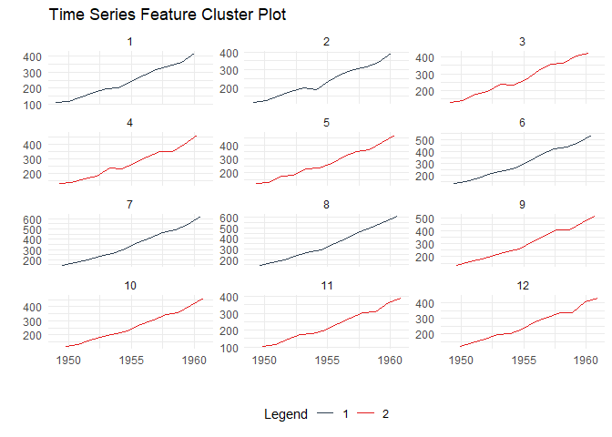
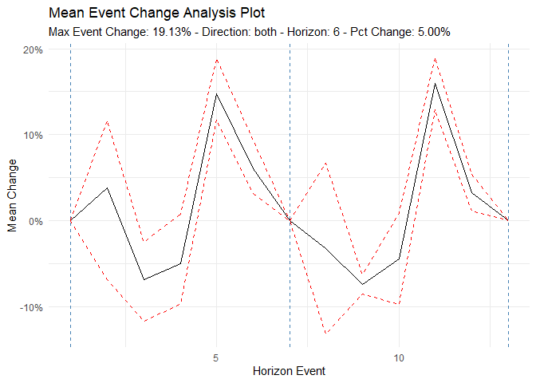
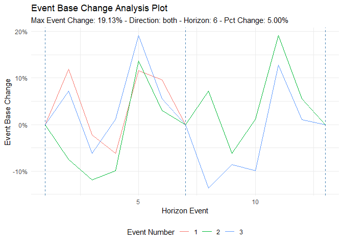
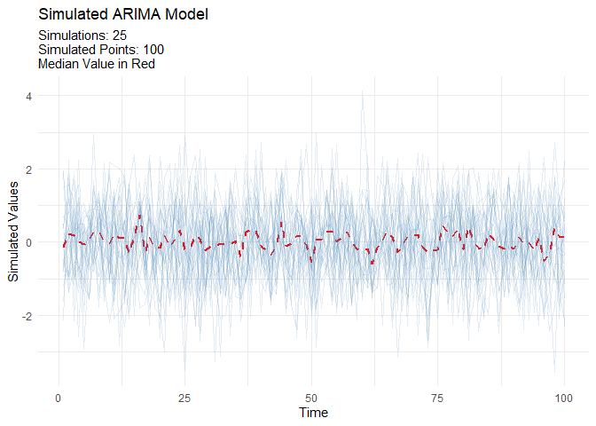

The Time Series Modeling Companion to healthyR
To view the full wiki, click here: Full healthyR.ts Wiki
healthyR.ts is a comprehensive R package designed specifically for time series analysis and forecasting of hospital administrative and clinical data. Built on the powerful tidymodels ecosystem, it provides a consistent, user-friendly framework that simplifies complex time series workflows.
Why healthyR.ts?
Hospital data analysis often requires handling time series for metrics like: - Average Length of Stay (ALOS) - Readmission rates - Patient volumes and admissions - Bed occupancy rates - Clinical outcomes over time
healthyR.ts takes the guesswork out of time series analysis by providing:
✅ Automated Workflows - One-function solutions for complete modeling pipelines
✅ Visual Analytics - Rich plotting functions for data exploration
✅ Data Generators - Simulate realistic time series for testing and validation
✅ Statistical Tools - Comprehensive suite of time series statistics
✅ Clustering - Feature-based time series clustering capabilities
✅ Forecasting - 15 automated model workflows (ARIMA, Prophet, XGBoost, and more)
Key Features
🤖 Automatic Modeling Workflows
Complete end-to-end modeling pipelines in a single function call:
- ts_auto_arima() - Automatic ARIMA modeling
- ts_auto_prophet_reg() - Facebook’s Prophet algorithm
- ts_auto_xgboost() - Gradient boosting for time series
- ts_auto_nnetar() - Neural network autoregression
- Plus 11 more specialized workflows!
Each function handles recipe creation, model specification, workflow setup, model fitting, tuning, and calibration automatically.
📊 Visualization Suite
- Calendar heatmaps for temporal patterns
- Time series clustering plots
- Velocity, acceleration, and growth visualizations
- QQ plots and scedasticity analysis
- Moving average and SMA plots
- Event analysis visualizations
Installation
Development Version
Get the latest features and bug fixes from GitHub:
# install.packages("devtools")
devtools::install_github("spsanderson/healthyR.ts")Quick Start
Basic Example: Random Walk Simulation
Generate and visualize random walk data to understand market volatility or patient flow variations:
library(healthyR.ts)
library(ggplot2)
df <- ts_random_walk()
head(df)
#> # A tibble: 6 × 4
#> run x y cum_y
#> <dbl> <dbl> <dbl> <dbl>
#> 1 1 1 -0.00559 994.
#> 2 1 2 0.119 1112.
#> 3 1 3 0.109 1233.
#> 4 1 4 0.0255 1265.
#> 5 1 5 -0.0320 1224.
#> 6 1 6 -0.0397 1176.Now that the data has been generated, lets take a look at it.
df %>%
ggplot(
mapping = aes(
x = x
, y = cum_y
, color = factor(run)
, group = factor(run)
)
) +
geom_line(alpha = 0.8) +
ts_random_walk_ggplot_layers(df)
That is still pretty noisy, so lets see this in a different way. Lets clear this up a bit to make it easier to see the full range of the possible volatility of the random walks.
library(dplyr)
library(ggplot2)
df %>%
group_by(x) %>%
summarise(
min_y = min(cum_y),
max_y = max(cum_y)
) %>%
ggplot(
aes(x = x)
) +
geom_line(aes(y = max_y), color = "steelblue") +
geom_line(aes(y = min_y), color = "firebrick") +
geom_ribbon(aes(ymin = min_y, ymax = max_y), alpha = 0.2) +
ts_random_walk_ggplot_layers(df)
Calendar Heatmap Visualization
Visualize temporal patterns in your data with calendar heatmaps - perfect for identifying seasonal trends or unusual patterns in hospital metrics:
data_tbl <- data.frame(
date_col = seq.Date(
from = as.Date("2020-01-01"),
to = as.Date("2022-06-01"),
length.out = 365*2 + 180
),
value = rnorm(365*2+180, mean = 100)
)
ts_calendar_heatmap_plot(
.data = data_tbl
, .date_col = date_col
, .value_col = value
, .interactive = FALSE
)
Time Series Clustering
Discover patterns by clustering time series based on their statistical features:
data_tbl <- ts_to_tbl(AirPassengers) %>%
mutate(group_id = rep(1:12, 12))
output <- ts_feature_cluster(
.data = data_tbl,
.date_col = date_col,
.value_col = value,
group_id,
.features = c("acf_features","entropy"),
.scale = TRUE,
.prefix = "ts_",
.centers = 3
)
ts_feature_cluster_plot(
.data = output,
.date_col = date_col,
.value_col = value,
.center = 2,
group_id
)

#>
#> $plot$plotly_plot
#>
#>
#> $data
#> $data$original_data
#> # A tibble: 144 × 4
#> index date_col value group_id
#> <yearmon> <date> <dbl> <int>
#> 1 Jan 1949 1949-01-01 112 1
#> 2 Feb 1949 1949-02-01 118 2
#> 3 Mar 1949 1949-03-01 132 3
#> 4 Apr 1949 1949-04-01 129 4
#> 5 May 1949 1949-05-01 121 5
#> 6 Jun 1949 1949-06-01 135 6
#> 7 Jul 1949 1949-07-01 148 7
#> 8 Aug 1949 1949-08-01 148 8
#> 9 Sep 1949 1949-09-01 136 9
#> 10 Oct 1949 1949-10-01 119 10
#> # ℹ 134 more rows
#>
#> $data$kmm_data_tbl
#> # A tibble: 3 × 3
#> centers k_means glance
#> <int> <list> <list>
#> 1 1 <kmeans> <tibble [1 × 4]>
#> 2 2 <kmeans> <tibble [1 × 4]>
#> 3 3 <kmeans> <tibble [1 × 4]>
#>
#> $data$user_item_tbl
#> # A tibble: 12 × 8
#> group_id ts_x_acf1 ts_x_acf10 ts_diff1_acf1 ts_diff1_acf10 ts_diff2_acf1
#> <int> <dbl> <dbl> <dbl> <dbl> <dbl>
#> 1 1 0.741 1.55 -0.0995 0.474 -0.182
#> 2 2 0.730 1.50 -0.0155 0.654 -0.147
#> 3 3 0.766 1.62 -0.471 0.562 -0.620
#> 4 4 0.715 1.46 -0.253 0.457 -0.555
#> 5 5 0.730 1.48 -0.372 0.417 -0.649
#> 6 6 0.751 1.61 0.122 0.646 0.0506
#> 7 7 0.745 1.58 0.260 0.236 -0.303
#> 8 8 0.761 1.60 0.319 0.419 -0.319
#> 9 9 0.747 1.59 -0.235 0.191 -0.650
#> 10 10 0.732 1.50 -0.0371 0.269 -0.510
#> 11 11 0.746 1.54 -0.310 0.357 -0.556
#> 12 12 0.735 1.51 -0.360 0.294 -0.601
#> # ℹ 2 more variables: ts_seas_acf1 <dbl>, ts_entropy <dbl>
#>
#> $data$cluster_tbl
#> # A tibble: 12 × 9
#> cluster group_id ts_x_acf1 ts_x_acf10 ts_diff1_acf1 ts_diff1_acf10
#> <int> <int> <dbl> <dbl> <dbl> <dbl>
#> 1 1 1 0.741 1.55 -0.0995 0.474
#> 2 1 2 0.730 1.50 -0.0155 0.654
#> 3 2 3 0.766 1.62 -0.471 0.562
#> 4 2 4 0.715 1.46 -0.253 0.457
#> 5 2 5 0.730 1.48 -0.372 0.417
#> 6 1 6 0.751 1.61 0.122 0.646
#> 7 1 7 0.745 1.58 0.260 0.236
#> 8 1 8 0.761 1.60 0.319 0.419
#> 9 2 9 0.747 1.59 -0.235 0.191
#> 10 2 10 0.732 1.50 -0.0371 0.269
#> 11 2 11 0.746 1.54 -0.310 0.357
#> 12 2 12 0.735 1.51 -0.360 0.294
#> # ℹ 3 more variables: ts_diff2_acf1 <dbl>, ts_seas_acf1 <dbl>, ts_entropy <dbl>
#>
#>
#> $kmeans_object
#> $kmeans_object[[1]]
#> K-means clustering with 2 clusters of sizes 5, 7
#>
#> Cluster means:
#> ts_x_acf1 ts_x_acf10 ts_diff1_acf1 ts_diff1_acf10 ts_diff2_acf1 ts_seas_acf1
#> 1 0.7456468 1.568532 0.1172685 0.4858013 -0.1799728 0.2876449
#> 2 0.7387865 1.528308 -0.2909349 0.3638392 -0.5916245 0.2930543
#> ts_entropy
#> 1 0.4918321
#> 2 0.6438176
#>
#> Clustering vector:
#> [1] 1 1 2 2 2 1 1 1 2 2 2 2
#>
#> Within cluster sum of squares by cluster:
#> [1] 0.3704304 0.3660630
#> (between_SS / total_SS = 59.8 %)
#>
#> Available components:
#>
#> [1] "cluster" "centers" "totss" "withinss" "tot.withinss"
#> [6] "betweenss" "size" "iter" "ifault"Event Analysis
Analyze time series behavior before and after significant events (e.g., policy changes, new treatments):
library(dplyr)
df <- ts_to_tbl(AirPassengers) %>% select(-index)
ts_time_event_analysis_tbl(
.data = df,
.horizon = 6,
.date_col = date_col,
.value_col = value,
.direction = "both"
) %>%
ts_event_analysis_plot()
ts_time_event_analysis_tbl(
.data = df,
.horizon = 6,
.date_col = date_col,
.value_col = value,
.direction = "both"
) %>%
ts_event_analysis_plot(.plot_type = "individual")
ARIMA Simulation
Generate realistic ARIMA time series for testing and validation:
output <- ts_arima_simulator()
output$plots$static_plot
Available Models
Automated Workflow Functions
Each function creates a complete modeling pipeline including recipe, model specification, workflow, fitting, and calibration:
| Function | Model Type | Description |
|---|---|---|
ts_auto_arima() |
ARIMA | Automatic ARIMA with auto-tuning |
ts_auto_arima_xgboost() |
Hybrid | ARIMA errors with XGBoost |
ts_auto_prophet_reg() |
Prophet | Facebook’s Prophet algorithm |
ts_auto_prophet_boost() |
Hybrid | Prophet with XGBoost |
ts_auto_xgboost() |
ML | Gradient boosting |
ts_auto_nnetar() |
Neural Net | Neural network autoregression |
ts_auto_exp_smoothing() |
ETS | Exponential smoothing |
ts_auto_smooth_es() |
Smooth | Smooth package ETS |
ts_auto_theta() |
Theta | Theta method |
ts_auto_croston() |
Croston | For intermittent demand |
ts_auto_lm() |
Linear | Linear regression with time features |
ts_auto_mars() |
MARS | Multivariate adaptive regression splines |
ts_auto_glmnet() |
GLM | Elastic net regression |
ts_auto_svm_poly() |
SVM | Support vector machine (polynomial) |
ts_auto_svm_rbf() |
SVM | Support vector machine (radial) |
Function Categories
healthyR.ts includes 90+ functions organized into these categories:
- 📊 Data Generators: Create synthetic time series data (random walks, Brownian motion, ARIMA)
- 📈 Plotting Functions: Comprehensive visualization suite for time series
- 🔍 Clustering: Feature-based time series clustering and analysis
- 🤖 Forecasting: Automated modeling workflows and model comparison
- 📐 Statistical Functions: Tests, transformations, and time series statistics
- 🔧 Utilities: Helper functions for data manipulation and transformation
- 📉 Augment Functions: Add features like velocity, acceleration, and growth rates
- 🧮 Vector Functions: Vectorized operations for time series
- 🔬 Recipe Steps: Custom tidymodels recipe steps for time series
Documentation
- 📘 Getting Started Vignette - Comprehensive introduction
- 📗 Function Reference - Complete function documentation
- 📙 Package Website - Full documentation site
- 📕 News/Changelog - Version history and updates
Learning Resources
Example Use Cases
- Hospital Admissions Forecasting - Predict daily/weekly admissions using multiple models
- Length of Stay Analysis - Analyze and forecast ALOS trends
- Readmission Rate Monitoring - Track and predict readmission patterns
- Resource Planning - Forecast bed occupancy and staffing needs
- Seasonal Pattern Detection - Identify and visualize seasonal trends in clinical data
Contributing
Contributions are welcome! Here’s how you can help:
- 🐛 Report bugs via GitHub Issues
- 💡 Suggest features through issue requests
- 🔧 Submit pull requests for bug fixes or new features
- 📖 Improve documentation by suggesting clarifications or additions
Please follow the tidyverse style guide for code contributions.
Related Packages
- healthyR - Hospital data analysis companion package
- healthyR.ai - Machine learning companion for healthcare
- healthyverse - Meta-package loading all healthyR packages
Citation
If you use healthyR.ts in your research or publications, please cite:
citation("healthyR.ts")Support
- 📧 Email: spsanderson@gmail.com
- 🐦 Issues: GitHub Issue Tracker
- 🌐 Website: https://www.spsanderson.com/healthyR.ts/
License
MIT License - see LICENSE for details
Author: Steven P. Sanderson II, MPH
Maintainer: Steven P. Sanderson II, MPH (spsanderson@gmail.com)
Copyright: © 2020-2025 Steven P. Sanderson II, MPH